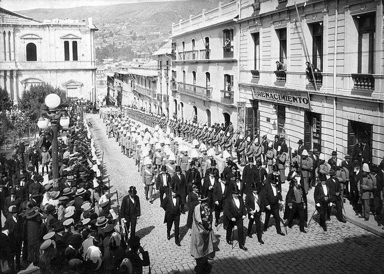

CONTENIDO:
HISTORIA DE LA PAZ
Nuestra Señora de La Paz fue fundada el 20 de octubre de 1548 por el capitán Alonso de Mendoza en el valle de Chuquiago Marka. Creada originalmente para conmemorar la paz tras las guerras civiles entre los conquistadores, la ciudad se convirtió en un motor político, cultural y económico fundamental en la historia boliviana.
Hitos Fundamentales de su Historia
- Fundación y Traslado (1548): La ciudad fue fundada originalmente en la localidad de Laja, pero debido a las inclemencias del clima y factores logísticos, se decidió trasladarla pocos días después al actual valle de Chuquiago, protegido por el imponente nevado Illimani.
- La Revolución de 1809: El 16 de julio de 1809, el protomártir Pedro Domingo Murillo lideró un levantamiento independentista contra el Imperio Español, estableciendo la primera Junta Tuitiva de América Latina. Este hito se celebra cada año como la principal efeméride departamental.
- Creación del Departamento (1826): El departamento de La Paz fue instituido oficialmente mediante Decreto Supremo el 23 de enero de 1826 por el Mariscal Antonio José de Sucre.
- Sede de Gobierno (1899): Tras la Guerra Federal, La Paz se consolidó como la sede de los poderes Ejecutivo y Legislativo de Bolivia, desplazando a Sucre, que conservó el poder Judicial.
- Ciudad Maravilla (2014): En tiempos modernos, La Paz fue reconocida a nivel global por su rica herencia cultural y su topografía única, siendo declarada "Ciudad Maravilla" del mundo en la iniciativa New7Wonders Cities.
Patrimonio y Legado
El casco histórico de la ciudad conserva la herencia de la época colonial, visible en sitios clave como el Museo San Francisco, la histórica Calle Jaén y la Casa de Murillo. Su desarrollo urbano entrelaza el pasado con el presente, combinando estructuras prehispánicas con edificaciones modernas, como la red de transporte por teleférico más extensa del mundo.
